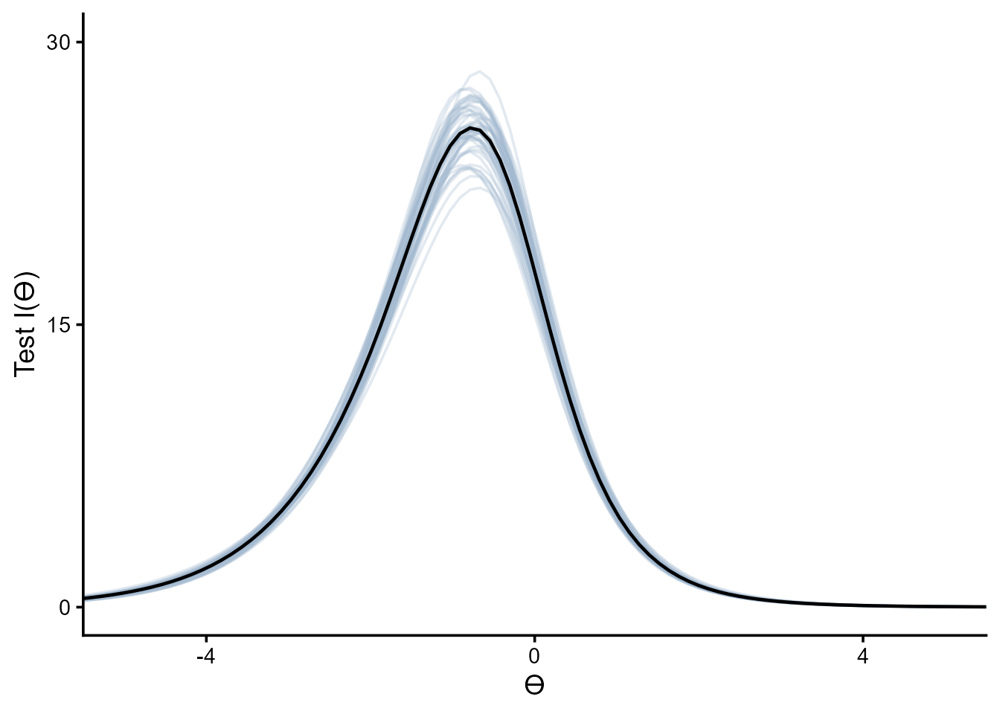
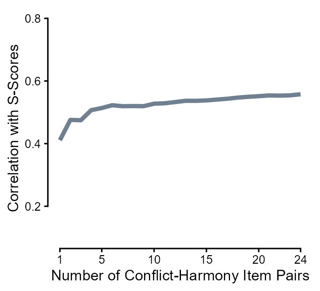
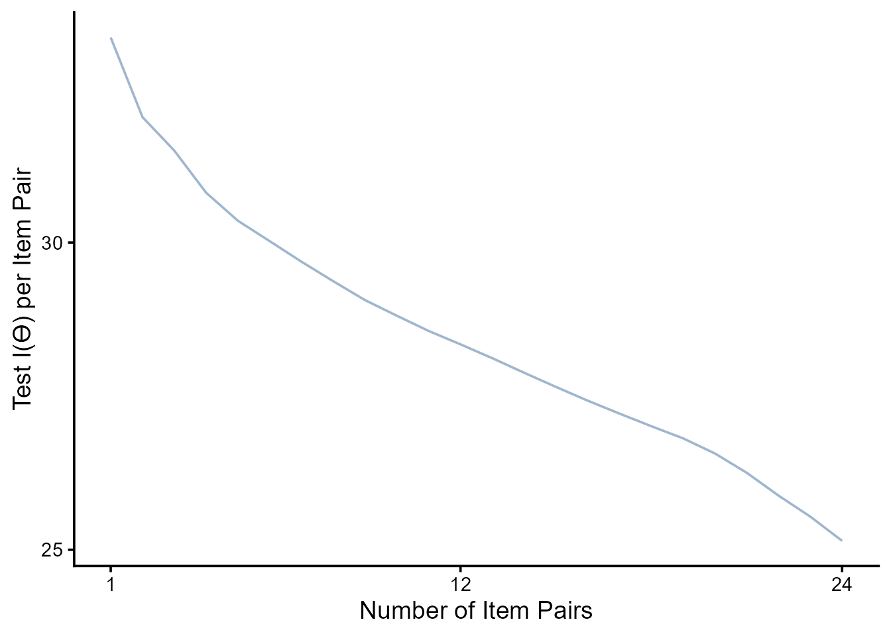
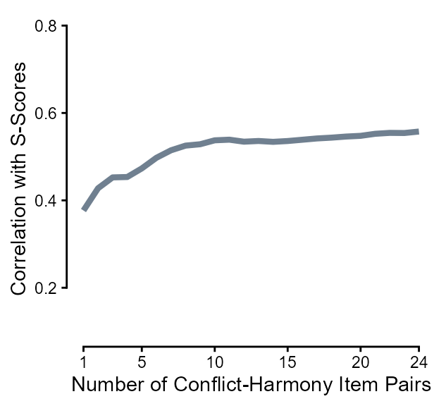
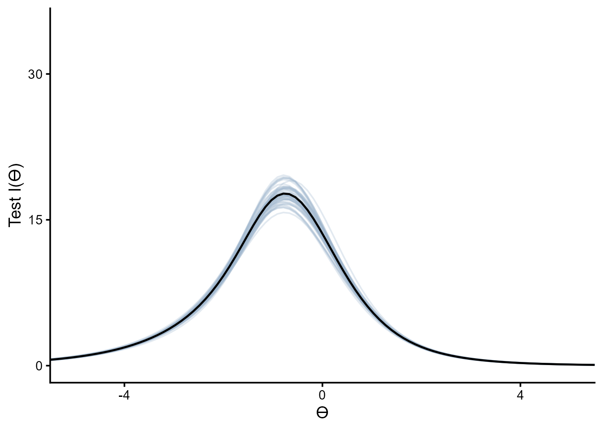
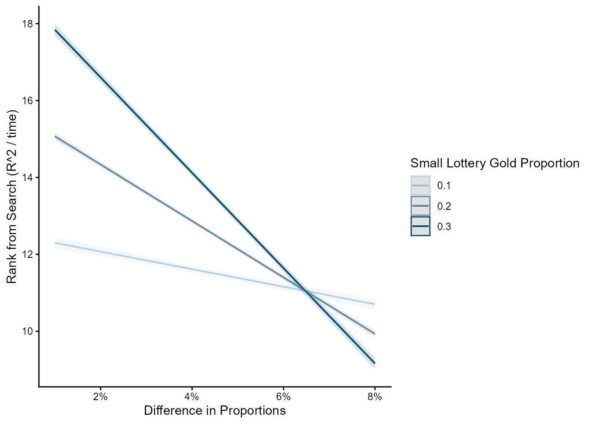

Code
library(tidyverse)
library(rstan)library(tidyverse)
library(rstan)dn_full <- rio::import("https://raw.githubusercontent.com/forecastingresearch/fpt/refs/heads/main/data_cognitive_tasks/task_datasets/data_denominator_neglect.csv")
anchoraig_full <- rio::import("https://raw.githubusercontent.com/forecastingresearch/fpt/refs/heads/main/data_cognitive_tasks/metadata_tables/task_aig_version.csv")anchor_ids <- anchoraig_full %>%
filter(task == "denominator_neglect_version_A" |
task == "denominator_neglect_version_B") %>%
mutate(task_version = factor(ifelse(task == "denominator_neglect_version_A", "A", "B"))) %>%
select(!task) %>%
filter(AIG_version == "anchor" & task_version == "B") %>%
pull(session_id)
dn_long <- dn_full %>%
arrange(session_id, trial_id) %>%
filter(session_id %in% anchor_ids & task_version == "B") %>%
mutate(proportion_difference = abs(left_lottery_gold_prop - right_lottery_gold_prop),
trial_id = paste0("item_", trial_id)) |>
select(-c(session_restart_id, time_elapsed, custom_timer_ended_trial,
trial_index, trial, response, trial_type))
dn_items <- dn_long %>%
select(trial_id, choice_type, proportion_difference) %>%
unique() %>%
separate_wider_delim(trial_id, delim = "_", names = c("trial", "item")) %>%
mutate(cond = paste0(choice_type, " ", round(proportion_difference * 100, 0), "%")) %>%
select(item, cond)
dn <- dn_long %>%
select(session_id, trial_id, correct) %>% # no choice_type or proportion_difference
pivot_wider(id_cols = session_id,
names_from = trial_id, values_from = correct) %>%
select(-session_id) %>%
drop_na()anchor_ids_c <- anchoraig_full %>%
filter(task == "denominator_neglect_version_A" |
task == "denominator_neglect_version_B") %>%
mutate(task_version = factor(ifelse(task == "denominator_neglect_version_A", "A", "B"))) %>%
select(!task) %>%
filter(AIG_version == "anchor" & task_version == "B") %>%
pull(session_id)
dn_dat_c <- rio::import("https://raw.githubusercontent.com/forecastingresearch/fpt/refs/heads/main/data_cognitive_tasks/task_datasets/data_denominator_neglect.csv") %>%
arrange(session_id, trial_id) %>%
filter(session_id %in% anchor_ids_c & task_version == "B") %>%
mutate(proportion_difference = abs(left_lottery_gold_prop - right_lottery_gold_prop),
trial_id = paste0("item_", trial_id)) |>
select(-c(session_restart_id, time_elapsed, custom_timer_ended_trial,
trial_index, trial, response, trial_type)) |>
left_join(rio::import("https://raw.githubusercontent.com/forecastingresearch/fpt/refs/heads/main/data_cognitive_tasks/metadata_tables/session.csv"),
by = "session_id") |>
left_join(rio::import("https://raw.githubusercontent.com/forecastingresearch/fpt/refs/heads/main/data_forecasting/processed_data/scores_quantile.csv") |>
select(subject_id, sscore_standardized) |>
summarize(.by = subject_id,
sscore = mean(sscore_standardized)),
by = "subject_id") |>
select(subject_id, trial_id, choice_type, proportion_difference, small_lottery_gold_prop, correct, sscore) |>
mutate(item = str_split_i(trial_id, "_", 2),
.keep = "unused")
saveRDS(dn_dat_c, here::here("Data", "Denominator Neglect", "dn_dat_c.rds"))anchor_ids_s <- anchoraig_full %>%
filter(task == "denominator_neglect_version_A" |
task == "denominator_neglect_version_B") %>%
mutate(task_version = factor(ifelse(task == "denominator_neglect_version_A", "A", "B"))) %>%
select(!task) %>%
filter(AIG_version == "anchor" & task_version == "B") %>%
pull(session_id)
dn_dat_s <- rio::import("https://raw.githubusercontent.com/forecastingresearch/fpt/refs/heads/main/data_cognitive_tasks/task_datasets/data_denominator_neglect.csv") %>%
arrange(session_id, trial_id) %>%
filter(session_id %in% anchor_ids_s & task_version == "B") %>%
mutate(proportion_difference = abs(left_lottery_gold_prop - right_lottery_gold_prop),
trial_id = paste0("item_", trial_id)) |>
select(-c(session_restart_id, time_elapsed, custom_timer_ended_trial,
trial_index, trial, response, trial_type)) |>
left_join(rio::import("https://raw.githubusercontent.com/forecastingresearch/fpt/refs/heads/main/data_cognitive_tasks/metadata_tables/session.csv"),
by = "session_id") |>
left_join(rio::import("https://raw.githubusercontent.com/forecastingresearch/fpt/refs/heads/main/data_forecasting/processed_data/scores_quantile.csv") |>
select(subject_id, sscore_standardized) |>
summarize(.by = subject_id,
sscore = mean(sscore_standardized)),
by = "subject_id") |>
select(subject_id, trial_id, choice_type, proportion_difference, small_lottery_gold_prop, correct, sscore) |>
mutate(item = str_split_i(trial_id, "_", 2),
.keep = "unused")
saveRDS(dn_dat_s, here::here("Data", "Denominator Neglect", "dn_dat_s.rds"))Denominator Neglect is a ratio comparison task in which participants choose between lotteries of gold and silver coins. Participants’ goal is to get the most gold coins over the course of the trials and therefore should select the lottery with the highest proportion of gold coins.
The following analysis focuses only on the combined version
dn_list <- list(J = nrow(dn),
K = ncol(dn),
y = dn)
dn_m <- stan(here::here("Models", "2pl-code.stan"),
data = dn_list,
chains = 4,
iter = 2500,
seed = 50401)
saveRDS(dn_m, here::here("Models", "denominator-neglect_2pl.rds"))dn_m <- readRDS(here::here("Models", "denominator-neglect_2pl.rds"))Probabilities of correct response given difficulty and discrimination estimates and hypothetical \(\theta\) values.
ps <- rstan::extract(dn_m, c("a", "b")) |>
as.data.frame() |>
mutate(rep = row_number()) |>
filter(rep %in% 1:50) |>
pivot_longer(-rep,
names_to = "item", values_to = "est") |>
separate_wider_delim(item, ".", names = c("param", "item")) |>
pivot_wider(id_cols = c(item, rep),
names_from = param, values_from = est) |>
expand_grid(th = seq(-6, 6, length.out = 100)) |>
mutate(p_1 = exp(a * (th - b)) / (1 + exp(a * (th - b))),
p_0 = 1 - p_1,
info = a^2 * (p_1 * p_0),
choice_type = ifelse(as.numeric(item) <= 24, "conflict", "harmony"))Below are the item response curves.
readRDS(here::here("Figures", "Denominator Neglect", "irc_denominator-neglect.rds"))
And below are the information curves.
readRDS(here::here("Figures", "Denominator Neglect", "ic_denominator-neglect.rds"))
Test information curve
tic <- ps %>%
summarize(.by = c(rep, th),
test_info = sum(info)) |>
ggplot(aes(x = th, y = test_info, group = rep)) +
geom_line(alpha = .3, color = "slategray3") +
geom_line(data = ps |> summarize(.by = c(rep, th),
test_info = sum(info)) |>
summarize(.by = th,
test_info = mean(test_info)),
aes(x = th, y = test_info),
inherit.aes = F, linewidth = .8) +
scale_y_continuous(breaks = c(0, 15, 30)) +
scale_x_continuous(breaks = c(-4, 0, 4)) +
coord_cartesian(xlim = c(-5, 5), ylim = c(0, 30)) +
labs(y = "Test I(ϴ)", x = "ϴ") +
theme_classic(base_size = 14) +
theme(strip.background = element_blank(),
strip.text.x = element_blank())
# saveRDS(tic, here::here("Figures", "Denominator Neglect", "tic.rds"))
tic
top_items <- data.frame(conf_item = as.numeric(),
harm_item = as.numeric(),
test_info_mean = as.numeric(),
test_info_sd = as.numeric())
for (i in seq(24)) {
top_items <- expand_grid(conf_item = ps |> filter(choice_type == "conflict") |>
filter(!(item %in% top_items$conf_item)) |>
pull(item) |>
unique(),
harm_item = ps |> filter(choice_type == "harmony") |>
filter(!(item %in% top_items$harm_item)) |>
pull(item) |>
unique()) |>
pmap(\(conf_item, harm_item){
ps |>
filter(item == conf_item | item == harm_item |
item %in% top_items$conf_item | item %in% top_items$harm_item) |>
summarize(.by = c(rep, th),
test_info = sum(info)) |>
summarize(.by = rep,
test_info = sum(test_info)) |>
summarize(rank = i,
conf_item = conf_item,
harm_item = harm_item,
test_info_mean = mean(test_info),
test_info_sd = sd(test_info))
}) |>
list_rbind() |>
arrange(desc(test_info_mean)) |>
head(1) |>
rbind(top_items) |>
arrange(rank)
}top_items <- readRDS(here::here("Data", "Denominator Neglect", "top_items.rds"))
top_items |>
ggplot(aes(x = rank, y = test_info_mean / rank)) +
geom_line(alpha = 1, color = "slategray3") +
scale_y_continuous(breaks = c(25, 30)) +
scale_x_continuous(breaks = c(1, 12, 24)) +
#coord_cartesian(xlim = c(-5, 5), ylim = c(0, 30)) +
labs(y = "Test I(ϴ) per Item Pair", x = "Number of Item Pairs") +
theme_classic(base_size = 14) +
theme(strip.background = element_blank(),
strip.text.x = element_blank())
top_items# A tibble: 24 × 5
rank conf_item harm_item test_info_mean test_info_sd
<int> <chr> <chr> <dbl> <dbl>
1 1 8 47 31.1 3.69
2 2 20 38 60.2 4.82
3 3 21 39 89.1 5.45
4 4 6 35 117. 5.31
5 5 23 40 145. 6.18
6 6 17 26 173. 7.17
7 7 24 27 199. 8.03
8 8 14 46 226. 8.47
9 9 22 37 252. 9.12
10 10 13 30 277. 9.42
# ℹ 14 more rowsdndat <- dn_long |>
left_join(rio::import("https://raw.githubusercontent.com/forecastingresearch/fpt/refs/heads/main/data_cognitive_tasks/metadata_tables/session.csv"),
by = "session_id") |>
left_join(rio::import("https://raw.githubusercontent.com/forecastingresearch/fpt/refs/heads/main/data_forecasting/processed_data/scores_quantile.csv") |>
select(subject_id, sscore_standardized) |>
summarize(.by = subject_id,
sscore = mean(sscore_standardized)),
by = "subject_id") |>
select(subject_id, trial_id, correct, sscore) |>
mutate(item = str_split_i(trial_id, "_", 2),
.keep = "unused")
saveRDS(dndat, here::here("Data", "Denominator Neglect", "dndat.rds"))
dn_func <- function(n_items) {
pmap(expand_grid(n_items = n_items),
\(n_items) {
dndat |>
filter(item %in% c(top_items |> head(n_items) |> pull(conf_item),
top_items |> head(n_items) |> pull(harm_item))) |>
pivot_wider(names_from = item, values_from = correct) |>
mutate(meanscore = rowMeans(across(!c(subject_id, sscore)), na.rm = T),
.keep = "unused") |> # alert alert na.rm = T
select(sscore, meanscore) |>
drop_na() |>
summarize(n_items = n_items,
cor = cor(sscore, meanscore) |> abs())
}) |>
list_rbind()
}
dn_cors <- map(1:24, dn_func) |>
list_rbind()
dn_cors# A tibble: 24 × 2
n_items cor
<int> <dbl>
1 1 0.411
2 2 0.476
3 3 0.475
4 4 0.507
5 5 0.514
6 6 0.523
7 7 0.519
8 8 0.520
9 9 0.520
10 10 0.527
# ℹ 14 more rowsdn_cors |>
ggplot(aes(x = n_items, y = cor)) +
geom_line(linewidth = 1.5, color = "slategray") +
scale_x_continuous(breaks = c(1, 5, 10, 15, 20, 24)) +
coord_cartesian(ylim = c(.1, .8)) +
labs(y = "Correlation with S-Scores", x = "Number of Conflict-Harmony Item Pairs") +
guides(x = guide_axis(cap = "both"), y = guide_axis(cap = "both")) +
theme_classic() 
To analyze how this task performed with fewer items, for each list of items, we subsetted various numbers of items from the test and calculated the magnitude of the sum scores on those items’ correlations with s-scores. We subsetted these items in two ways: (1) By selecting pairs of items in the order of their summed item information and (2) selecting item pairs randomly. For (1), these correlations were deterministic based on the number of items included because the items were selected by their order, but for (2) for each number of items, we repeated this 1,000 times.
readRDS(here::here("Data", "Denominator Neglect", "dn_all.rds")) |>
summarize(.by = n_items,
across(cor, list(mean = mean))) |>
ggplot(aes(x = n_items, y = cor_mean)) +
# geom_ribbon(data = readRDS(here::here("Data", "Denominator Neglect", "dn_noinfo.rds")) |>
# summarize(.by = n_items,
# across(cor, list(mean = mean,
# lower = ~ quantile(.x, 0.05, names = FALSE),
# upper = ~ quantile(.x, 0.95, names = FALSE)))),
# aes(ymin = cor_lower, ymax = cor_upper),
# alpha = .5, fill = "thistle3") +
# geom_line(data = readRDS(here::here("Data", "Denominator Neglect", "dn_noinfo.rds")) |>
# summarize(.by = n_items,
# across(cor, list(mean = mean,
# lower = ~ quantile(.x, 0.05, names = FALSE),
# upper = ~ quantile(.x, 0.95, names = FALSE)))),
# linewidth = 1, color = "thistle3") +
geom_line(linewidth = 1.5, color = "slategray") +
# annotate("text", label = str_wrap("Using summed information gives an advange over randomly selecting item pairs at small item counts",
# width = 28),
# x = 2.4, y = .63, hjust = 0, vjust = 0,
# color = "thistle4", lineheight = .8) +
# annotate("curve", arrow = arrow(length = unit(2.5, "mm")),
# x = 2.2, xend = 1.9, y = .61, yend = .5,
# color = "thistle4") +
scale_x_continuous(breaks = c(1, 5, 10, 15, 20, 24)) +
coord_cartesian(ylim = c(.1, .8)) +
labs(y = "Correlation with S-Scores", x = "Number of Conflict-Harmony Item Pairs") +
guides(x = guide_axis(cap = "both"), y = guide_axis(cap = "both")) +
theme_classic() 
The following analysis focuses only on the combied version
anchor_ids_s <- anchoraig_full %>%
filter(task == "denominator_neglect_version_A" |
task == "denominator_neglect_version_B") %>%
mutate(task_version = factor(ifelse(task == "denominator_neglect_version_A", "A", "B"))) %>%
select(!task) %>%
filter(AIG_version == "anchor" & task_version == "A") %>%
pull(session_id)
dn_long_s <- dn_full %>%
arrange(session_id, trial_id) %>%
filter(session_id %in% anchor_ids_s & task_version == "A") %>%
mutate(proportion_difference = abs(left_lottery_gold_prop - right_lottery_gold_prop),
trial_id = paste0("item_", trial_id)) |>
select(-c(session_restart_id, time_elapsed, custom_timer_ended_trial,
trial_index, trial, response, trial_type))
# dn_items <- dn_long %>%
# select(trial_id, choice_type, proportion_difference) %>%
# unique() %>%
# separate_wider_delim(trial_id, delim = "_", names = c("trial", "item")) %>%
# mutate(cond = paste0(choice_type, " ", round(proportion_difference * 100, 0), "%")) %>%
# select(item, cond)
dn_s <- dn_long_s %>%
select(session_id, trial_id, correct) %>% # no choice_type or proportion_difference
pivot_wider(id_cols = session_id,
names_from = trial_id, values_from = correct) %>%
select(-session_id) %>%
drop_na()dn_list_s <- list(J = nrow(dn_s),
K = ncol(dn_s),
y = dn_s)
dn_m_s <- stan(here::here("Models", "2pl-code.stan"),
data = dn_list_s,
chains = 4,
iter = 2500,
seed = 50401)
saveRDS(dn_m_s, here::here("Models", "denominator-neglect-s_2pl.rds"))dn_m_s <- readRDS(here::here("Models", "denominator-neglect-s_2pl.rds"))Probabilities of correct response given difficulty and discrimination estimates and hypothetical \(\theta\) values.
ps_s <- rstan::extract(dn_m_s, c("a", "b")) |>
as.data.frame() |>
mutate(rep = row_number()) |>
filter(rep %in% 1:50) |>
pivot_longer(-rep,
names_to = "item", values_to = "est") |>
separate_wider_delim(item, ".", names = c("param", "item")) |>
pivot_wider(id_cols = c(item, rep),
names_from = param, values_from = est) |>
expand_grid(th = seq(-6, 6, length.out = 100)) |>
mutate(p_1 = exp(a * (th - b)) / (1 + exp(a * (th - b))),
p_0 = 1 - p_1,
info = a^2 * (p_1 * p_0),
choice_type = ifelse(as.numeric(item) <= 24, "conflict", "harmony"))Test information curve
tic_s <- ps_s %>%
summarize(.by = c(rep, th),
test_info = sum(info)) |>
ggplot(aes(x = th, y = test_info, group = rep)) +
geom_line(alpha = .3, color = "slategray3") +
geom_line(data = ps |> summarize(.by = c(rep, th),
test_info = sum(info)) |>
summarize(.by = th,
test_info = mean(test_info)),
aes(x = th, y = test_info),
inherit.aes = F, linewidth = .8) +
scale_y_continuous(breaks = c(0, 15, 30)) +
scale_x_continuous(breaks = c(-4, 0, 4)) +
coord_cartesian(xlim = c(-5, 5), ylim = c(0, 30)) +
labs(y = "Test I(ϴ)", x = "ϴ") +
theme_classic(base_size = 14) +
theme(strip.background = element_blank(),
strip.text.x = element_blank())
saveRDS(tic_s, here::here("Figures", "Denominator Neglect", "tic_s.rds"))
tic_s
top_items_s <- data.frame(conf_item = as.numeric(),
harm_item = as.numeric(),
test_info_mean = as.numeric(),
test_info_sd = as.numeric())
for (i in seq(24)) {
top_items_s <- expand_grid(conf_item = ps_s |> filter(choice_type == "conflict") |>
filter(!(item %in% top_items_s$conf_item)) |>
pull(item) |>
unique(),
harm_item = ps_s |> filter(choice_type == "harmony") |>
filter(!(item %in% top_items_s$harm_item)) |>
pull(item) |>
unique()) |>
pmap(\(conf_item, harm_item){
ps |>
filter(item == conf_item | item == harm_item |
item %in% top_items_s$conf_item | item %in% top_items_s$harm_item) |>
summarize(.by = c(rep, th),
test_info = sum(info)) |>
summarize(.by = rep,
test_info = sum(test_info)) |>
summarize(rank = i,
conf_item = conf_item,
harm_item = harm_item,
test_info_mean = mean(test_info),
test_info_sd = sd(test_info))
}) |>
list_rbind() |>
arrange(desc(test_info_mean)) |>
head(1) |>
rbind(top_items_s) |>
arrange(rank)
}
saveRDS(top_items_s, here::here("Data", "Denominator Neglect", "top_items_s.rds"))top_items_s <- readRDS(here::here("Data", "Denominator Neglect", "top_items_s.rds"))
top_items_s |>
ggplot(aes(x = rank, y = test_info_mean / rank)) +
geom_line(alpha = 1, color = "slategray3") +
scale_y_continuous(breaks = c(25, 30)) +
scale_x_continuous(breaks = c(1, 12, 24)) +
#coord_cartesian(xlim = c(-5, 5), ylim = c(0, 30)) +
labs(y = "Test I(ϴ) per Item Pair", x = "Number of Item Pairs") +
theme_classic(base_size = 14) +
theme(strip.background = element_blank(),
strip.text.x = element_blank())
test <- readRDS(here::here("Data", "Search Algorithms", "v5test_dat.rds"))
dat <- dn_dat_c |>
left_join(readRDS(here::here("Data", "Denominator Neglect", "top_items.rds")) |>
pivot_longer(c(conf_item, harm_item),
names_to = "choice_type", values_to = "item") |>
select(item, rank),
by = "item") |>
mutate(item = paste0("dn.c_", item)) |>
left_join(test |>
filter(task == "dn.c") |>
# specific to denominator neglect's item pairs
mutate(rank = as.integer(str_split_i(item, "_", 2)),
.keep = "unused"),
by = "rank") |>
mutate(alg_rank = factor(rep, ordered = T),
proportion_difference_scaled = proportion_difference * 100)
# lm(as.numeric(alg_rank) ~ proportion_difference_scaled * small_lottery_gold_prop, dat) |>
# summary()
lm(as.numeric(alg_rank) ~ proportion_difference_scaled * small_lottery_gold_prop, dat) |>
ggeffects::ggpredict(terms = c("proportion_difference_scaled", "small_lottery_gold_prop")) |>
plot() +
theme_classic() +
labs(title = NULL, y = "Rank from Search (R^2 / time)") +
scale_x_continuous("Difference in Proportions", labels = scales::label_percent(scale = 1)) +
scale_color_manual("Small Lottery Gold Proportion",
values = c("0.1" = "#bbcedf", "0.2" = "#698aa4", "0.3" = "#004c6d")) +
scale_fill_manual("Small Lottery Gold Proportion",
values = c("0.1" = "#bbcedf", "0.2" = "#698aa4", "0.3" = "#004c6d")) +
coord_cartesian(xlim = c(1, 8))